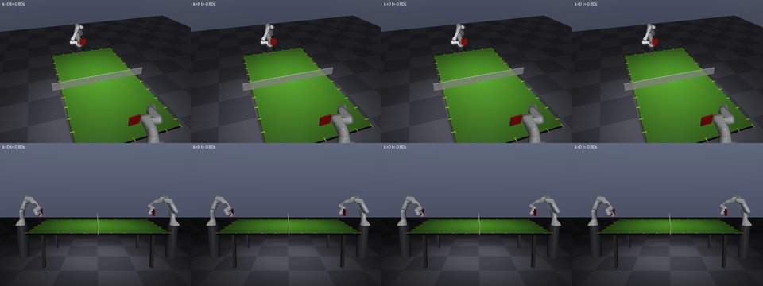

Formats
SingleDuel

One game to 5 points under ITTF laws (from 4:4 a two-point lead is needed; at 6:6 the next point wins). Against the scripted opponent, it serves every point from recorded real serves; in a duel a neutral serve machine serves and the receiver alternates. The player sees the ball only through two cameras and chooses when, with what paddle pose and at what velocity to hit.
The only sport with direct play (the model acts without code) on main. Body-swap matches (six bodies) are a prototype.
MuJoCo
Franka Panda arm with a paddle (fixed base)
Athlete skill API and joint-level actions both declared on main; the full Engineer protocol is a pilot.
n = 12 matches
6 / 6
Wins n = 6
3 / 6
Wins n = 6
3 / 6
Wins n = 6
0 / 6
Wins n = 6
Rules revision wallclock-6+duel-wallclock-4